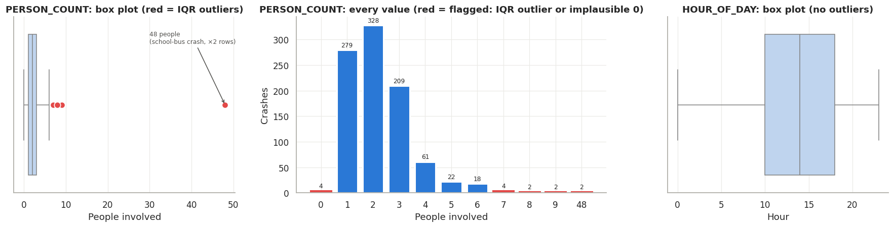
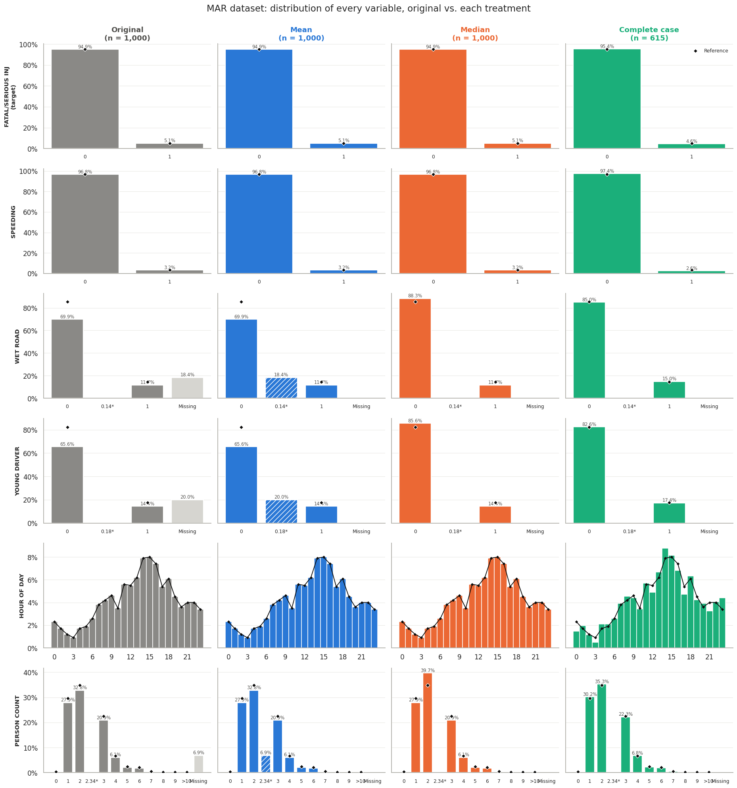
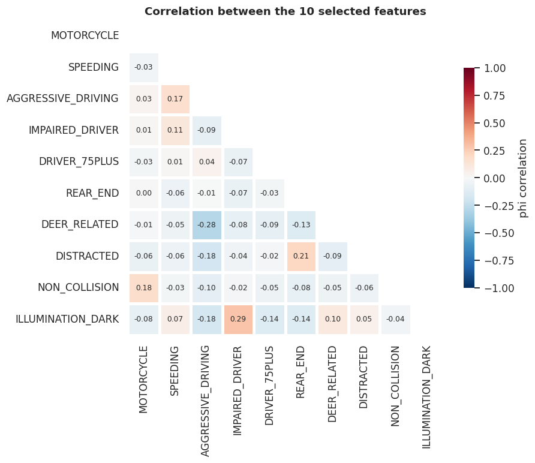
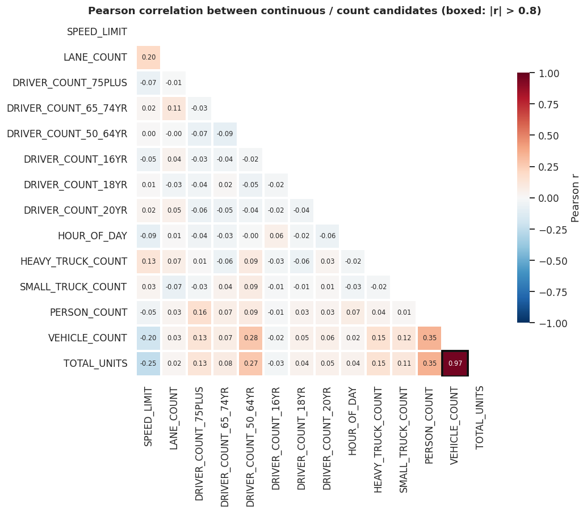
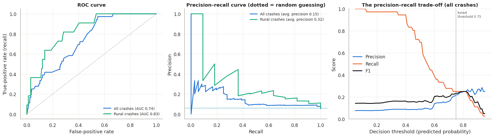

Missing Data and Rural Crash Severity in Pennsylvania
How missing-data treatments bias a crash-severity model, and which factors make rural crashes fatal or seriously injurious
We analyze Pennsylvania Department of Transportation (PennDOT) crash records in two parts. Part I compares three common missing-data treatments (mean imputation, median imputation and complete-case removal) on two versions of the same 1,000 crashes: one with values missing at random (MAR) and one with values missing not at random (MNAR). Because the two files hide different cells, we reconstruct a complete “best-available truth” from them and from the full crash extract, which lets us measure bias directly instead of guessing at it. Complete-case removal is the most biased treatment under both mechanisms, and markedly so under MNAR. It discards disproportionately severe crashes, and its coefficient error is about twice that of imputation. Mean imputation is the least biased simple method. Median imputation distorts binary predictors by recoding every gap as “no”. Predictive accuracy and F1 barely differ between treatments, because the five available predictors are weak. Part II builds a ten-feature logistic regression for fatal or suspected-serious-injury crashes, interpreted for rural roads. After collapsing duplicated crash records (1,000 rows → 679 crashes), we select features with a first-principles screen, a univariate filter and a redundancy step. The final model reaches a cross-validated ROC AUC of 0.761 overall and 0.841 on rural crashes. Motorcycles are the most dangerous single factor (odds ratio ≈ 4.6); aggressive driving contributes the most severe rural crashes; impairment and speeding each raise the odds about 2.4×.
Every figure in this paper is produced by one of two executed notebooks: missing_data_analysis.ipynb (Part I) and rural_severity_model.ipynb (Part II). The script project-site/scripts/export_assets.py copies their figures into project-site/assets/. Key numbers quoted in the text are kept in _variables.yml.
1 Introduction
Crash databases are the main evidence base for road-safety policy, and they are rarely complete. Fields go unrecorded, reports are filled in partially, and records are joined across tables in ways that duplicate them. How an analyst handles these problems can change the answer to the question that matters most: what makes a crash deadly?
This paper addresses two questions with PennDOT crash data (Pennsylvania Department of Transportation 2026):
- Missing data (Part I). When predictors are missing, how do mean imputation, median imputation and complete-case removal change the data and a logistic regression fitted to it? Does the answer depend on whether values are missing at random (MAR) or not at random (MNAR)?
- Rural crash severity (Part II). Using a first-principles approach combined with a simple filter, which ten factors best predict crashes in which someone is killed or seriously injured, and which of them contribute most on rural roads?
The outcome throughout is FATAL_OR_SUSP_SERIOUS_INJ: the crash had at least one person killed or with a suspected serious injury. It is rare, about 5% of crashes, which shapes every modeling choice below.
2 Data
Three extracts are used, all row-aligned to the same crashes:
| File | Rows | Columns | Use |
|---|---|---|---|
MAR_ex1.xls |
1,000 | 6 | Part I: predictors missing at random |
MNAR_ex1.xls |
1,000 | 6 | Part I: predictors missing not at random |
features.xls |
1,030 | 80 | Part I reference; Part II modeling |
The six Part I variables are SPEEDING, WET_ROAD, YOUNG_DRIVER (0/1 flags), HOUR_OF_DAY (0–23), PERSON_COUNT, and the outcome. features.xls adds 74 more crash, flag and roadway fields, documented in the PennDOT data dictionary (Pennsylvania Department of Transportation 2026).
2.1 Data-quality findings
- Inconsistent names. The MAR file calls the hour column
HOUR(MNAR:HOUR_OF_DAY), and the MNAR file’s worksheet is namedMCAR_ex1. Both are harmonized on load. - Spreadsheet debris. Rows 1000–1029 of
features.xlshave no outcome and at most two filled cells. They are removed. - Duplicated crashes.
LANE_COUNTandSPEED_LIMITcome from PennDOT’s ROADWAY table, which holds one row per road involved. When it is joined to the crash data, a crash on several roads appears several times. The 1,000 rows are only 679 distinct crashes (224 crashes appear 2–5 times; Section 4.1). This matters for any model evaluated by cross-validation. - Undocumented codes.
URBAN_RURAL = 4(421 crashes) is not defined in the dictionary (only 1–3 are), andURBAN_AREAis not documented at all. TheRURALflag, which equalsURBAN_RURAL = 1exactly, is used instead. - Outliers.
PERSON_COUNT = 48is a genuine school-bus crash and is kept.PERSON_COUNT = 0is implausible for a reportable crash and is flagged.HOUR_OF_DAYandSPEED_LIMITcontain no out-of-range values.

PERSON_COUNT outliers. The 48-person value is a real school-bus crash; values of 0 are implausible.
3 Part I: Missing-data treatments
3.1 Missingness mechanisms
Let \(R\) indicate which values are observed, and split the data into observed and missing parts, \(Y = (Y_{\text{obs}}, Y_{\text{mis}})\). Following Rubin (1976) and Little and Rubin (2019):
\[ \begin{aligned} \text{MCAR:}\quad & P(R \mid Y_{\text{obs}}, Y_{\text{mis}}) = P(R) \\ \text{MAR:}\quad & P(R \mid Y_{\text{obs}}, Y_{\text{mis}}) = P(R \mid Y_{\text{obs}}) \\ \text{MNAR:}\quad & P(R \mid Y_{\text{obs}}, Y_{\text{mis}}) \text{ depends on } Y_{\text{mis}} \end{aligned} \]
Under MAR, missingness may depend on variables we can see (including the outcome) but not on the hidden value itself. MNAR cannot be detected from observed data alone, because the evidence is exactly what is missing. We can test it here only because the hidden values can be recovered (Section 3.2).
Table 2 summarizes the gaps. Only WET_ROAD, YOUNG_DRIVER and PERSON_COUNT are affected, and PERSON_COUNT is missing in the same 69 rows in both files. The two files differ in the shape of missingness. In MAR the gaps are scattered, so 38.5% of rows have at least one. In MNAR, WET_ROAD and YOUNG_DRIVER are always missing together (224 rows with both, 10 with all three), so more cells are missing (537 vs. 453) but fewer rows are affected (29.3%).
| Variable | MAR missing | MNAR missing |
|---|---|---|
WET_ROAD |
184 (18.4%) | 234 (23.4%) |
YOUNG_DRIVER |
200 (20.0%) | 234 (23.4%) |
PERSON_COUNT |
69 (6.9%) | 69 (6.9%) |
| Rows with any gap | 385 (38.5%) | 293 (29.3%) |

Rows with WET_ROAD missing have a higher fatal/serious-injury rate in both files: 7.6% vs. 4.5% under MAR and 7.3% vs. 4.4% under MNAR (Fisher’s exact test (Fisher 1922), p ≈ 0.10 and 0.09). Dropping those rows will therefore remove severe crashes, even under MAR.
3.2 A best-available truth
The MAR file, the MNAR file and the first 1,000 rows of features.xls agree on every cell observed in more than one of them (0 disagreements out of 5,172–5,547 shared cells). Because each hides different cells, combining them recovers the true value of most gaps. The remaining 44 WET_ROAD and 49 YOUNG_DRIVER cells are missing in all three files. We derive them from always-complete source fields, using the data dictionary:
| Flag | Derivation rule | Basis | Agreement with known values |
|---|---|---|---|
WET_ROAD |
ROAD_CONDITION ∈ {08 Water, 09 Wet} |
Learned from data; codes from dictionary | 956 / 956 (100%) |
YOUNG_DRIVER |
any of DRIVER_COUNT_16YR…_20YR > 0 |
Dictionary definition (“at least 1 driver age 16–20”) | 948 / 951 (99.7%) |
The three YOUNG_DRIVER conflicts (rows 623, 624, 913) are inconsistencies within the source data: the flag is 1 while every 16–20 driver count is 0. The result is a complete 1,000-row reference. About 99% of its cells are recorded values and the rest are rule-derived. Every “bias” below is distance from this reference.
Direct MNAR check. With the hidden values known, we compare them with the observed ones. We then test whether a cell’s true value predicts that it is missing after controlling for the always-observed variables (a logistic regression of the missingness indicator on the true value, SPEEDING, HOUR_OF_DAY and the outcome).
The MAR file behaves like MAR. In the MNAR file, wet roads were about 40% more common among hidden cells, and the effect holds after conditioning (p ≈ 0.05). YOUNG_DRIVER points the expected way but is not significant. The evidence supports the MNAR label but is borderline, not conclusive. Note also that the PERSON_COUNT gaps are not completely random, but they are largely explained by observed variables.
3.3 Treatments and their effect on the data
Each file is treated three ways:
- mean imputation: replace each gap with the column mean;
- median imputation: replace each gap with the column median;
- complete-case (CC) removal: drop every row with any gap.
Figure 3 and Figure 4 compare the original and treated distributions side by side, with the reference marked by black diamonds. Two artifacts are immediately visible. Mean imputation creates values that cannot occur (e.g. WET_ROAD = 0.13). Median imputation sets every missing yes/no value to “no”, because the median of a rare flag is 0.


Figure 5 summarizes the distortion of each variable’s mean.
- Mean imputation reproduces the observed mean exactly. Under MAR that is nearly unbiased. Under MNAR it inherits the observed-data bias (wet roads −8%, young drivers +6%).
- Median imputation understates wet roads by 19% (MAR) and 30% (MNAR), and young drivers by 18–19%.
- Complete-case removal keeps 615 (MAR) or 707 (MNAR) rows. It lowers the fatal/serious rate from 5.1% to 4.6% (MAR) and 4.4% (MNAR) because the removed rows were disproportionately severe. Under MAR it discards 23 of the 51 severe crashes.

3.4 Logistic regression on every dataset
We fit \[ \operatorname{logit} P(\text{severe}) = \beta_0 + \beta_1\,\text{SPEEDING} + \beta_2\,\text{WET\_ROAD} + \beta_3\,\text{YOUNG\_DRIVER} + \beta_4\,\text{HOUR\_OF\_DAY} + \beta_5\,\text{PERSON\_COUNT} \] on each treated dataset and on the reference (Hosmer, Lemeshow, and Sturdivant 2013). Because only 5.1% of crashes are severe, an unweighted model predicts “not severe” for everyone: 94.9% accuracy and F1 = 0. We therefore use balanced class weights, which trade accuracy for the ability to find severe crashes. Performance is estimated with stratified 5-fold cross-validation repeated 20 times. The original (untreated) files cannot be fitted directly; standard software silently drops incomplete rows, which is complete-case analysis.
We run two evaluations. In the first, each model is scored on its own treated data. In the second, a fair head-to-head, each model is trained on treated training rows (imputation statistics from those rows only) and scored on the true reference values of the same held-out rows (Table 5).
| Treatment | MAR F1 | MNAR F1 | MAR accuracy | MNAR accuracy | MAR AUC | MNAR AUC |
|---|---|---|---|---|---|---|
| Mean | 0.085 | 0.092 | 0.614 | 0.585 | 0.517 | 0.536 |
| Median | 0.088 | 0.095 | 0.618 | 0.586 | 0.518 | 0.540 |
| Complete case | 0.092 | 0.099 | 0.580 | 0.639 | 0.520 | 0.541 |
| Reference | 0.098 | 0.098 | 0.590 | 0.590 | 0.540 | 0.540 |
Predictive differences are smaller than the noise. F1 ranges from 0.085 to 0.099, against a fold-to-fold standard deviation of about 0.034, and ROC AUC sits at 0.52–0.54, barely above chance. With only SPEEDING statistically significant (odds ratio ≈ 4, p ≈ 0.007), the five predictors carry little signal. When scored on its own data, the MNAR complete-case model looks best (accuracy 0.646, F1 0.102, AUC 0.581). That is an illusion: it is tested only on the less severe rows that survived the MNAR filter.
Bias shows up in the coefficients. Figure 6 compares each treatment’s odds ratios with the reference. Table 6 reports the root-mean-square error of the coefficients on a per-standard-deviation scale, so all five predictors are comparable.

| Treatment | MAR coef. RMSE | MNAR coef. RMSE | MAR CI width vs. ref. | MNAR CI width vs. ref. |
|---|---|---|---|---|
| Mean | 0.062 |
0.058 |
1.01× | 1.04× |
| Median | 0.040 |
0.059 |
1.02× | 1.07× |
| Complete case | 0.064 |
0.110 | 1.40× | 1.64× |
Under MNAR, complete-case removal nearly doubles the coefficient error and inflates the speeding odds ratio from 4.0 to 7.5. It also widens confidence intervals by 40–64% because it discards data.
3.5 Part I findings
- Complete-case removal is the most biased treatment under both mechanisms, and markedly so under MNAR. The removed rows are systematically different (wetter roads, more severe crashes), so deleting them shifts the outcome rate, distorts coefficients and widens every interval.
- Mean imputation is the least biased simple method overall. It preserves variable means (exactly, under MAR) and keeps coefficients close to the reference. It does create impossible fractional flag values and shrinks variance.
- Median imputation should not be used for binary predictors. It silently recodes every gap as “no”, the largest distortion of the predictor distributions. Its coefficient error is similar to mean imputation.
- Under MNAR, every simple treatment stays biased. A method that uses only observed values cannot know that the hidden roads were wetter.
- Better than any imputation: recover the values from source fields (Table 3), or use multiple imputation with auxiliary variables and missingness indicators (Buuren and Groothuis-Oudshoorn 2011), plus a sensitivity analysis for MNAR.
4 Part II: What makes a rural crash severe?
4.1 Cleaning and the rural lens
Part II uses all 80 columns of features.xls. Three cleaning steps matter:
- Collapse duplicated crashes. Consecutive rows that agree on every non-roadway column (at least 60 columns compared) are one crash. None of the merged crashes has a conflicting time of day, and 161 of them differ in
SPEED_LIMIT/LANE_COUNT, as expected for multiple roads. Crash fields take the first non-missing value, and roadway fields take the maximum (the fastest road involved). This leaves 679 crashes, of which 36 are severe (5.3%). Without this step, copies of one crash would land in both training and test folds. - Rebuild calculated flags.
WET_ROAD,YOUNG_DRIVER,DRIVER_20YR,DRIVER_50_64YRandMULTIPLE_VEHICLEare rebuilt from complete source fields (99.6–100% agreement with known values). - Drop duplicate and undocumented columns (
TIME_OF_DAY,ILLUMINATION,URBAN_RURAL,URBAN_AREA). Remaining gaps are mean-imputed inside each training fold.

Rural lens. Only 11 of 177 rural crashes were severe. A common guideline asks for about ten outcome events per predictor (Peduzzi et al. 1996), so ten features on rural crashes alone would be unstable. We therefore train on all crashes and apply the rural lens at every step: the filter is run on rural crashes separately, rural evidence enters the final selection, the model is evaluated on rural crashes alone, and conclusions are drawn for rural roads.
4.2 Feature selection
Step 1: first principles. Crash severity is the energy that reaches a human body, relative to what that body can tolerate. Each column is assigned to a mechanism, or rejected:
| Mechanism | Reasoning | Examples |
|---|---|---|
| Energy / speed | Kinetic energy grows with speed² | SPEEDING, SPEED_LIMIT |
| Unprotected road user | No crash structure, belts or airbags | MOTORCYCLE, PEDESTRIAN |
| Crash geometry | Head-on and side impacts: high closing speed, little crush space | REAR_END, HEAD_ON, NON_COLLISION |
| Impairment & behavior | Changes speeds, reactions and crash types | IMPAIRED_DRIVER, AGGRESSIVE_DRIVING |
| Frailty / inexperience | Older bodies tolerate less force | DRIVER_75PLUS, YOUNG_DRIVER |
| Environment | Visibility, speed and friction | ILLUMINATION_DARK, WET_ROAD |
| Road setting; vehicle mix | Speeds, conflicts, mass mismatch | STATE_ROAD, HEAVY_TRUCK_COUNT |
Rejected columns: administrative and calendar fields (county, month, day of week), undocumented or duplicate codes, and AUTOMOBILE_COUNT (a proxy for vehicle mix with no mechanism of its own). RURAL is the analysis lens, not a predictor, because it is constant on rural roads. No remaining column records the outcome, so there is no leakage.
Step 2: a simple filter. Each candidate is tested on its own, on all crashes and on rural crashes. For flags we report the risk ratio \[ \text{RR} = \frac{P(\text{severe} \mid \text{flag} = 1)}{P(\text{severe} \mid \text{flag} = 0)} \] with Fisher’s exact test (Fisher 1922); numeric features use the Mann–Whitney test (Mann and Whitney 1947). A feature passes if it is exposed in at least 15 crashes and has p < 0.20 in either group. The threshold is loose because this is screening, and with 36 events a strict cut-off would discard real effects.

Step 3: redundancy and the final pick. Several passing flags carry the same information. ALCOHOL_RELATED is identical to DRINKING_DRIVER, and both sit inside IMPAIRED_DRIVER. RUNNING_STOP_SIGN and RUNNING_RED_LT are entirely contained in AGGRESSIVE_DRIVING. SUDDEN_DEER ≈ DEER_RELATED. We keep the umbrella flag in each case. SPEEDING is also contained in AGGRESSIVE_DRIVING, but it is kept for its distinct energy mechanism and its strong signal. Combining filter rank, first-principles strength and rural evidence gives the final ten (Table 8). ILLUMINATION_DARK was chosen over LEFT_TURN, the next by overall p-value, because of its stronger rural signal and its core mechanism.
| Feature | Mechanism | RR (all) | p (all) | RR (rural) | p (rural) |
|---|---|---|---|---|---|
MOTORCYCLE |
Unprotected road user | 5.73 | 0.001 | 8.81 | 0.024 |
SPEEDING |
Energy / speed | 4.12 | 0.018 | 7.64 | 0.032 |
AGGRESSIVE_DRIVING |
Impairment & behavior | 2.35 | 0.016 | 4.45 | 0.057 |
IMPAIRED_DRIVER |
Impairment & behavior | 2.36 | 0.053 | 3.06 | 0.165 |
DRIVER_75PLUS |
Frailty | 2.10 | 0.117 | 2.24 | 0.260 |
NON_COLLISION |
Crash geometry | 3.00 | 0.084 | 1.67 | 0.483 |
REAR_END |
Crash geometry | 0 severe of 127 | 0.001 | 0 of 19 | 0.611 |
DISTRACTED |
Impairment & behavior | 0 severe of 70 | 0.042 | 0 of 9 | 1.000 |
DEER_RELATED |
Crash geometry | 0 severe of 49 | 0.100 | 0 of 29 | 0.215 |
ILLUMINATION_DARK |
Environment | 0.51 | 0.165 | 0 of 46 | 0.069 |
4.3 Multicollinearity
The largest pairwise correlation among the ten features is 0.29 (ILLUMINATION_DARK with IMPAIRED_DRIVER; impaired driving is mostly at night). Every variance inflation factor, \(\text{VIF}_j = 1/(1 - R_j^2)\), is below 1.25, far from the usual warning levels of 5 and 10. By contrast, the top ten by p-value alone, without the redundancy step, contains identical columns with infinite VIF (Figure 10).


4.3.1 Pairwise association tests
As a pair-by-pair check, we also apply the two standard association tests. Pearson’s \(r\) is used for pairs of continuous or count variables. For pairs of categorical (yes/no) variables, we run a chi-square test on their contingency table and measure strength with Cramér’s V, \[ V = \sqrt{ rac{\chi^2}{n\,(\min(r, c) - 1)}}, \] which for two yes/no variables equals \(|\phi|\). The two numbers answer different questions. The p-value tests the null hypothesis that the variables are independent: a small p-value means they are associated, and with hundreds of crashes even a weak link is significant. The strength (\(|r|\) or V) decides redundancy: above 0.8, drop one of the pair; 0.7–0.8 is marginal; below 0.7, keep both.
Worked example. For AGGRESSIVE_DRIVING × ALCOHOL_RELATED, alcohol crashes are less often aggressive than independence would predict: 14 observed vs. 22.1 expected. \(\chi^2 = 6.65\), df = 1, p = 0.010, so the two are associated. But V = 0.10, a weak association, so both are kept.
| Check | Pairs tested | Result | Decision |
|---|---|---|---|
| Pearson, continuous / count candidates | 91 | Only VEHICLE_COUNT × TOTAL_UNITS > 0.8 (r = 0.97); none 0.7–0.8 |
Neither is in the final ten |
| Chi-square, the ten selected features | 45 | 19 pairs significant (p < 0.05); largest V = 0.29 | Keep all ten |
| Chi-square, related flags (section 5) | 9 | V > 0.8 for drinking × alcohol (1.00), work zone × work-zone indicator (1.00), sudden deer × deer (0.99), pedestrian × vulnerable road user (0.92), drinking × impaired (0.88) | One flag per pair kept at most (umbrella flags) |
Of the 45 pairs, 24 have an expected cell count below 5, where the chi-square approximation is unreliable. For these pairs Fisher’s exact test (Fisher 1922) reaches the same conclusion at p < 0.05 in 23 of 24 cases. The nested flags (RUNNING_STOP_SIGN, RUNNING_RED_LT ⊂ AGGRESSIVE_DRIVING) have low V (≈ 0.17) and were removed for nesting, not correlation: 100% of those crashes are already aggressive-driving crashes.


4.4 Feature analysis
Figure 13 shows the severe-crash rate with and without each factor, for all crashes and for rural crashes. On rural roads, half of motorcycle crashes and 40% of speeding crashes were severe.

How rural crashes differ. Deer strikes are four times as common in rural crashes (16% vs. 4%), and none of the 49 was severe. Non-collision events are 2.8× as common. Rear-end and distraction crashes are about half as common, which helps explain the higher rural severe rate (6.2% vs. 5.0%). The main risk factors (aggressive driving, impairment, speeding, drivers aged 75+) occur about as often on rural roads as elsewhere.
Why darkness looks protective. First principles say darkness should raise severity, yet dark crashes were severe less often (3.1% vs. 6.0%). The crash mix explains it: motorcycle crashes happen almost entirely in daylight (4.5% of daylight crashes vs. 0.7% of dark ones), and dark crashes are twice as often deer strikes. Darkness is a useful predictor here, but the association is not causal.
4.5 The final model
Model. Logistic regression on the ten features, with mean imputation and standardization learned inside each training fold, balanced class weights and a mild L2 penalty. The penalty is needed because three features have zero severe crashes, which would push unpenalized coefficients to −∞ (complete separation; Firth (1993) discusses penalized alternatives).
Threshold. The probability cut-off is tuned to maximize F1, where \(F_1 = 2\,\text{precision}\cdot\text{recall}/(\text{precision}+\text{recall})\). It is chosen by an inner cross-validation within each training fold, so the test fold never influences it (median threshold 0.75).
Evaluation. Stratified 5-fold cross-validation repeated 20 times (100 test folds), reported for all crashes and for rural crashes alone.
| Scope | Accuracy | Precision | Recall | F1 | ROC AUC |
|---|---|---|---|---|---|
| All crashes | 0.900 |
0.228 |
0.284 |
0.225 |
0.761 |
| Rural crashes | 0.898 |
0.322 |
0.413 |
0.304 |
0.841 |
| Always “not severe” | 0.947 | 0 | 0 | 0 | 0.500 |
Accuracy is the wrong yardstick for a 5% outcome (Saito and Rehmsmeier 2015). The trivial model scores 94.7% and finds nothing. Our model gives up some accuracy to catch about 28% of severe crashes overall and 41% on rural roads. Roughly one in four of its “severe” flags is correct, 4–5× the base rate. It ranks crashes well, especially rural ones (AUC 0.84). Rural metrics are noisy: each rural test fold holds only about two severe crashes (F1 sd ≈ 0.25).


Is this the best ten? Under the same folds, the selected ten outperform every alternative tested:
| Feature set | F1 (all) | F1 (rural) | AUC (all) | AUC (rural) |
|---|---|---|---|---|
| All 73 candidates | 0.111 | 0.143 | 0.645 | 0.751 |
| Top 10 by p-value only | 0.159 | 0.208 | 0.709 | 0.780 |
| Selected ten, darkness → left turn | 0.201 | 0.239 | 0.741 | 0.789 |
| Selected ten | 0.225 | 0.304 | 0.761 | 0.841 |
The selection used the full dataset, so the selected model’s scores are slightly optimistic for new data.
4.6 Which factors matter most on rural roads?
For interpretation, the ten-feature model is refitted on all crashes without class weights, keeping the mild penalty. 95% intervals come from 1,000 bootstrap resamples (Figure 16). For the three zero-severe flags, the direction is certain (no resample puts them above 1), but their size is set mostly by the penalty.

How much a factor contributes to rural severe crashes depends on its odds ratio and on how often it occurs. The population attributable fraction (Miettinen 1974) among the severe rural cases is \[ \text{PAF} = p_c \,\frac{\text{OR} - 1}{\text{OR}}, \] where \(p_c\) is the share of severe rural crashes with the factor.

- Aggressive driving contributes the most. It appears in about half of rural crashes and in 9 of the 11 severe ones, accounting for roughly a third of them (PAF ≈ 36%), despite a moderate odds ratio of 1.8.
- Motorcycles are the most dangerous single factor (OR ≈ 4.6, 95% CI 1.6–10.6), the only factor whose interval clearly excludes no effect.
- Impairment and speeding each raise the odds about 2.4× and account for about 10% of severe rural crashes each.
- Drivers aged 75+ and non-collision events each raise the odds about 1.8×. Non-collision events are 2.8× more common on rural roads.
- Low-risk rural crashes are deer strikes (common, never severe), and rear-end and distraction crashes (mostly non-rural).
5 Discussion and limitations
- Few severe crashes. There are 36 in total and 11 on rural roads. Only
MOTORCYCLEhas an interval that clearly excludes no effect.AGGRESSIVE_DRIVINGandIMPAIRED_DRIVERare borderline. - Duplicates also affect Part I. The MAR and MNAR files are row-for-row copies of the first 1,000 rows of
features.xls, so they contain the same duplicated crashes. Their cross-validated scores are likely inflated, because copies of one crash can fall in both training and test folds. The comparison between treatments is still fair, since every treatment shares the problem. - Association, not causation, especially for darkness and the zero-severe flags.
- Missing variables. The extract lacks seat-belt use, curvature, undivided two-lane head-on risk and distance to trauma care, all central to rural severity.
- Slight optimism. The features were selected on the full dataset.
- Origin of the missingness. In
features.xls, about 16 unrelated columns each have 200–260 gaps, while most have none. This pattern suggests the missingness was introduced for the exercise. Real PennDOT flags such asWET_ROADare calculated fields, not hand-entered.
6 Conclusion
How missing data are handled changes the model. Complete-case removal, the default in most software, was the most biased choice and was worst when data were missing not at random. Simple imputation was less biased, and recovering values from source fields was better still. For rural crash severity, a small, mechanism-driven feature set outperformed both a purely statistical selection and the full feature set. It points to aggressive driving, motorcycles, impairment and speeding as the levers that matter most on rural roads. Confirming these findings requires multi-year PennDOT data, with thousands of severe rural crashes, and the missing safety variables listed above.